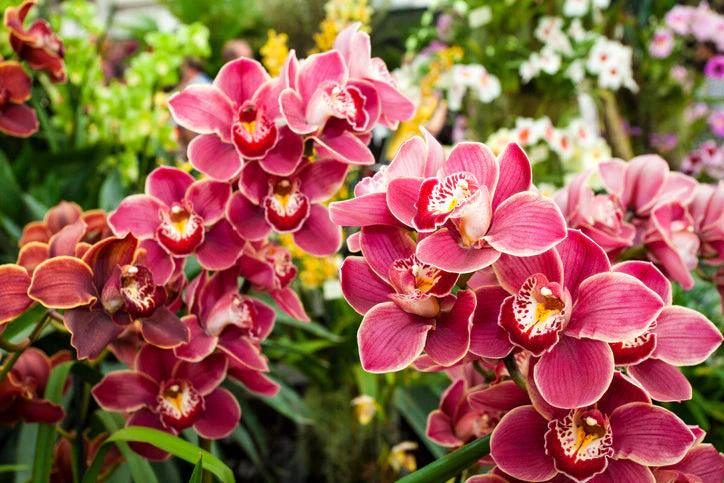
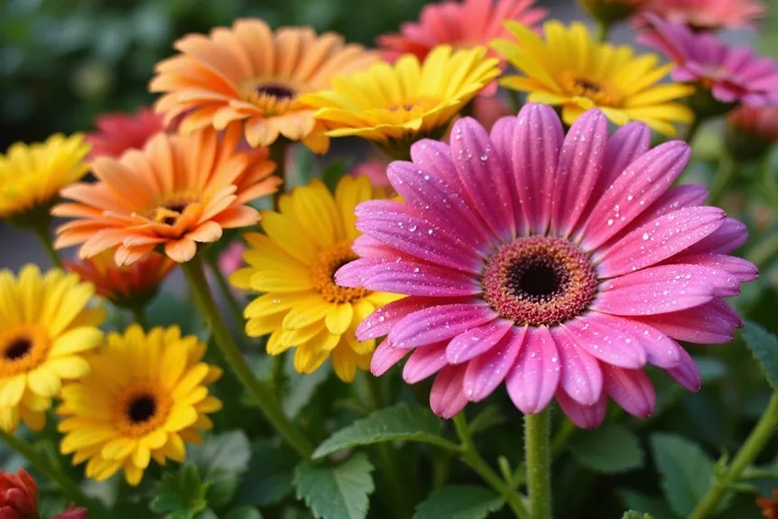
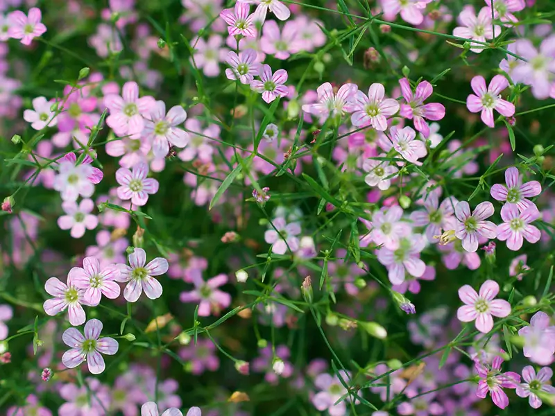

Every year brings a new shift in floral aesthetics for grand weddings and events. As a professional decorator or event planner, staying ahead of these trends is crucial for delivering breathtaking setups while managing bulk procurement budgets.
In 2026, we are seeing a return to opulence blended with organic textures. Here are the top 5 flowers dominating the wedding scene this year.
1. The Classic White Rose (Avalanche)

White roses remain the undisputed king of grand Indian weddings. Their versatility allows them to be used in mandaps, aisle runners, and vast floral ceilings. The Avalanche variety, known for its large head size and robust stem, offers incredible volume coverage per square foot.
"When covering large structures, stem strength is just as important as the bloom size. Avalanche roses provide the durability needed for 48-hour event setups."
2. Orchids (Dendrobium & Phalaenopsis)

For a touch of cascading luxury, orchids are the go-to choice. We've seen a massive surge in the demand for white and purple Dendrobium orchids for stage backdrops. They add an element of tropical elegance and have an exceptionally long vase life, making them ideal for multi-day ceremonies.
3. Pastel Gerberas

Moving away from the traditional deeply saturated marigolds, modern couples are opting for pastel palettes. Soft peach, blush pink, and cream gerberas are being utilized extensively in daytime mehndi and haldi functions. They offer great visual impact at a cost-effective bulk rate.
4. Gypsophila (Baby's Breath)

Once considered just a filler, Gypsophila has taken center stage. We are seeing full clouds of Baby's Breath being used to create ethereal, floating structures above dining areas and dance floors. It's voluminous, cost-effective in bulk, and looks stunning under modern event lighting.
5. Spider Chrysanthemums
For structural and textural intrigue, spider chrysanthemums are gaining heavy traction. Their spiky, fireworks-like petals add immense depth to floral arches and entrance installations. Sourcing these in export-grade quality ensures they don't shatter during transport.
Procurement Tips for 2026
When ordering these top varieties for your next event, remember to secure your allocations early. Farm-direct sourcing through B2B partners like Fleur Vine ensures you get export-grade quality, uniform coloring, and cold-chain handled delivery straight to your venue.
← Back to all articles